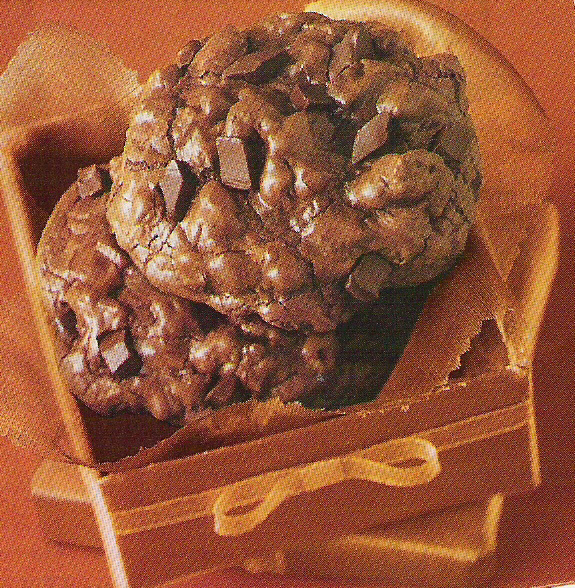
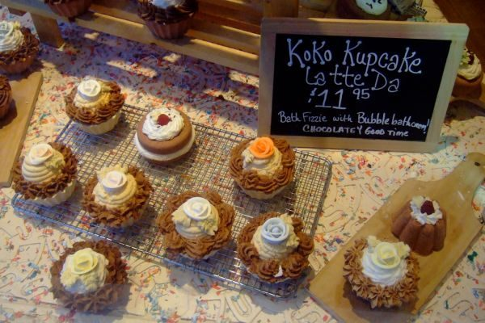

Chocolate Bliss Cookies


Photo: HeyRocker (CC BY 2.0)
Rich, brownie-like drop cookies made with melted semi-sweet chocolate, semi-sweet chocolate chunks, and chopped nuts.
Directions
- Melt chocolate in microwave or on stove top till smooth and well blended in sugar, butter, eggs and vanilla with wooden spoon until well blended. Stir in flour and baking powder. Stir in chocolate chunks and nuts. Drop by 1/4 cupfuls onto ungreased cookies sheets. Bake at 350 degrees for 13 to 14 minutes or until cookies are puffed and feel set to the touch. Cool 1 minute, remove to wire rack to cool further. Makes about 18 large cookies. If omitting nuts, increase flour to 3/4 cup to prevent spreading.
- Melt the 8 squares of semi-sweet chocolate in the microwave or on the stove top until smooth.
- With a wooden spoon, blend in the brown sugar, butter, eggs, and vanilla until well blended.
- Stir in the flour and baking powder.
- Stir in the chocolate chunks and nuts.
- Drop by 1/4 cupfuls onto ungreased cookie sheets.
- Bake at 350 degrees for 13 to 14 minutes, or until the cookies are puffed and feel set to the touch.
- Cool 1 minute, then remove to a wire rack to cool further. Makes about 18 large cookies.
- Note: If omitting the nuts, increase the flour to 3/4 cup to prevent spreading.
Goes well with
https://lizotte.cool/recipe/chocolate-bliss-cookies.html